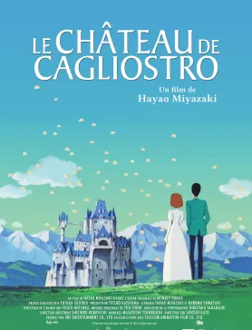
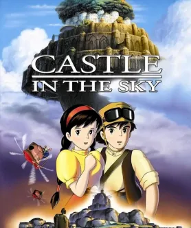
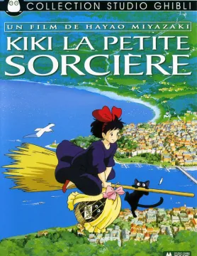
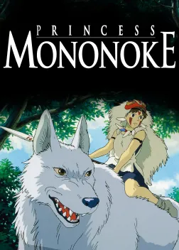
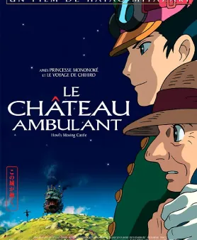
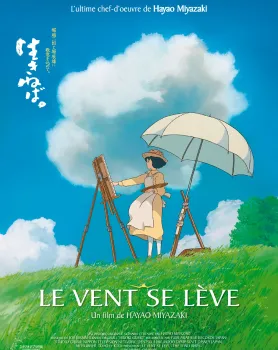

film
Filmographie - Réalisation Hayao Miyasaki
1968 - Horus Prince du soleil
Un conte manichéen, mais dont les thèmes et la vigueur graphique annoncent Princesse Mononoké. - L'Humanité
1968 - Horus Prince du soleil
“100 minutes trépidantes et pétillantes d'inventivité et de dynamisme” -Mad movie
1984: Nauscicaä et la vallée du vent
“Un authentique monument animé aux qualités tout bonnement universelles.” -Première
1986 : Le château dans le ciel
“De la prose poétique, une oeuvre d'art alliant intelligence, vitesse et beauté.” - Les Inrockuptibles
1988 : Mon voisin Totoro
““Un dessin animé japonais tendre et magique” - Télérama
1989 : Kiki La petite sorcière
Comme souvent chez Miyazaki, le merveilleux côtoie le quotidien avec une simplicité lumineuse.” - Aden
1992 : Porco Rosso
S’échappant des lois nippones du dessin animé, ce film convainc par ses audaces. “ - Le Monde
1997: Princesse Mononoké
Chef-d'œuvre de l'animation japonaise,un conte d'une étourdissante invention visuelle.” - Libération
1992 : Porco Rosso
S’échappant des lois nippones du dessin animé, ce film convainc par ses audaces. “ - Le Monde
1997: Princesse Mononoké
Chef-d'œuvre de l'animation japonaise,un conte d'une étourdissante invention visuelle.” - Libération
2001 : Le voyage de Chihiro
“Le Voyage de Chihiro devient ainsi un film aussi complexe que plus fascinant film qui soit.” - Aden
2004 : Le château ambulant
“Le Château ambulant est l'une des oeuvres les plus complexes, mais aussi l'une des plus limpides, de Miyazaki Hayao.” - Fluctuat.net
2008 : Ponyo sur la falaise
“ Une nouvelle fable écologique et amoureuse de toute beauté. “ - ELLE
2013 : Le vent se lève
“ Au croisement de l’Histoire et de la poésie, "Le Vent se lève" demeure l’un des plus beaux films de son auteur” - FranceInfo Culture